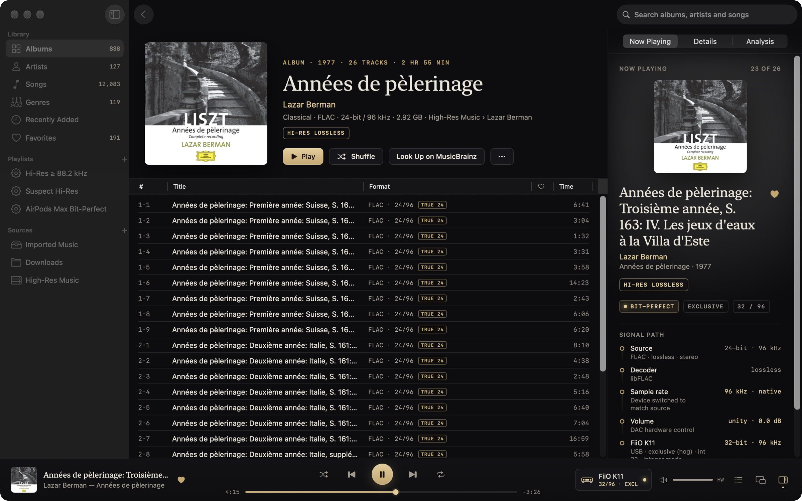

The free, open-source Mac player for
surround and hi-res
music collections.
SACD rips · DTS CDs
Atmos · TrueHD · DTS
Spatial Audio
Signal path
Open source
· GPL-3.0 · macOS 14.4+ · Apple silicon & Intel
